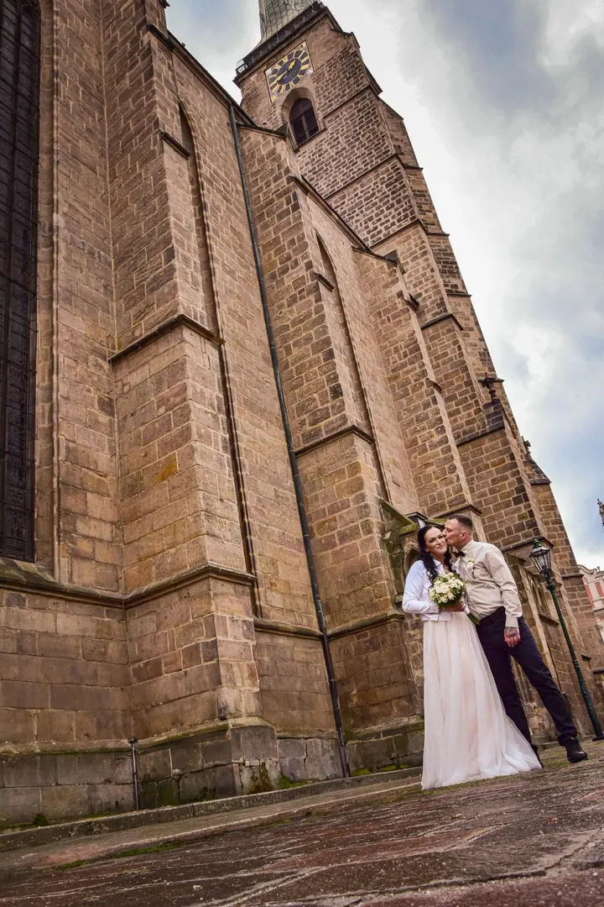
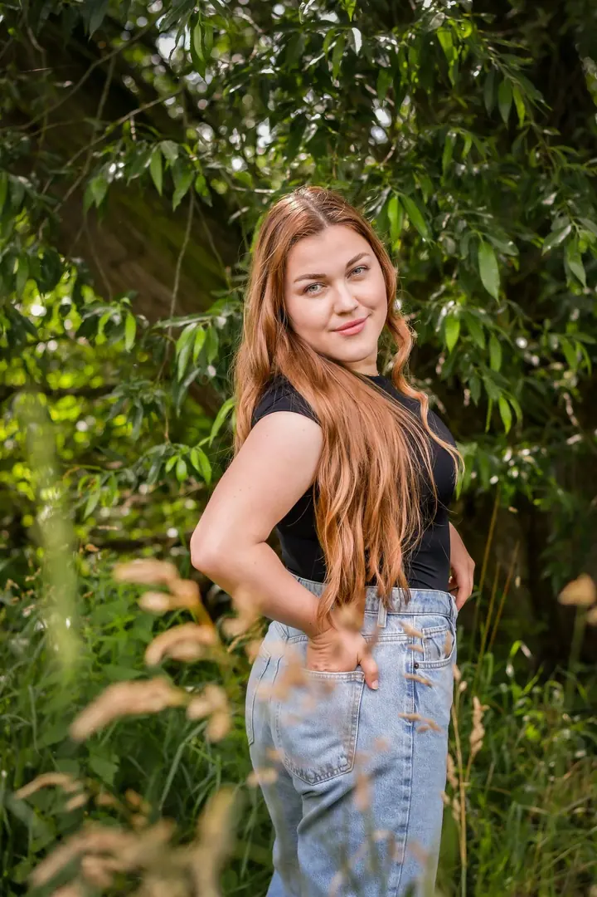
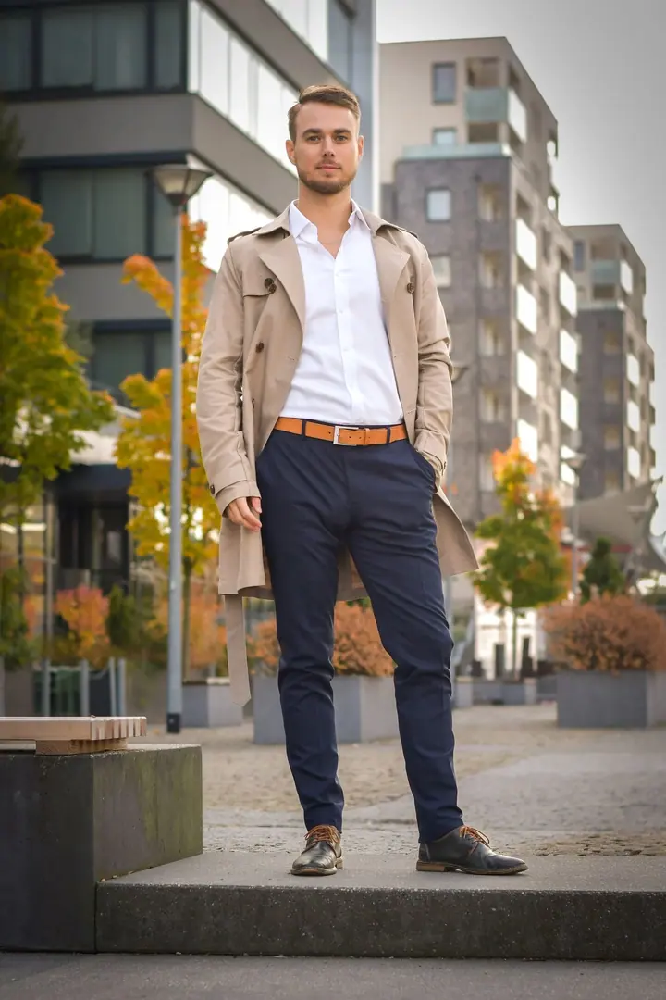
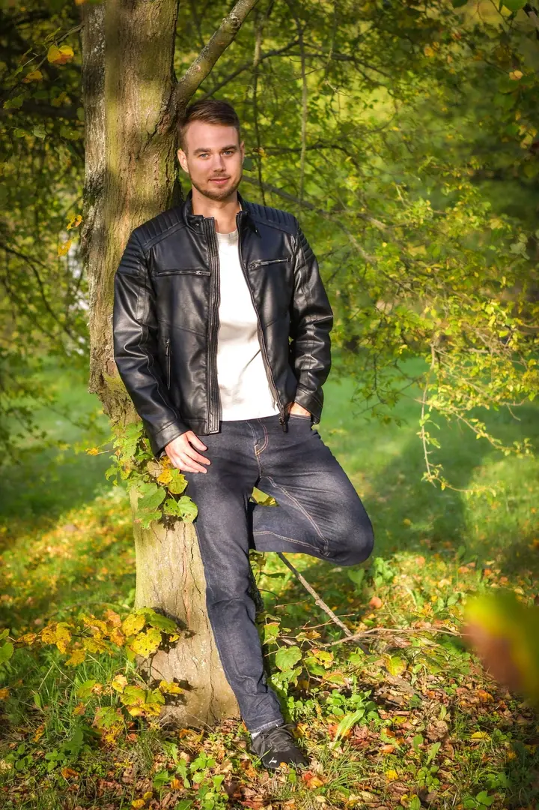
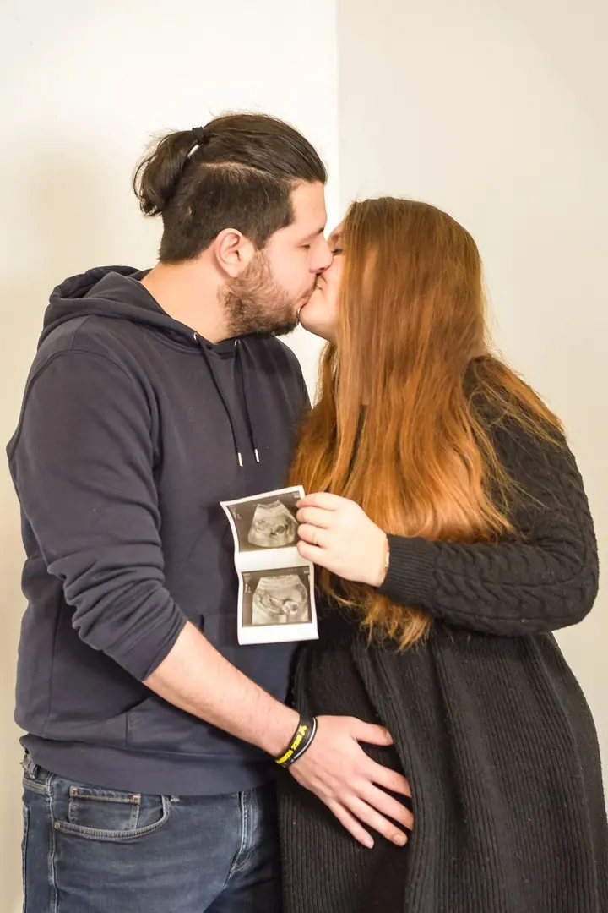
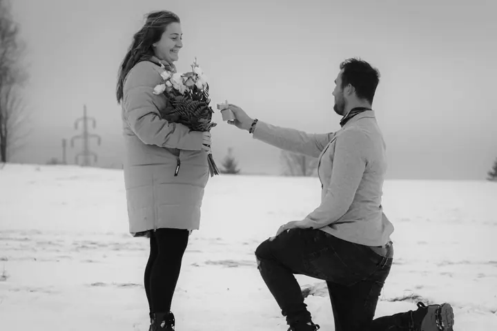

Svatby
Ať už je to stodola, zámek nebo louka za městem, postarám se, aby z fotek bylo cítit, jací jste. Bez kýče, bez přetvářky, s důrazem na emoce a energii.





Jmenuji se Vendula Černá, pocházím z Plzeňského kraje a dnes nejčastěji fotím v Praze. Fotím svatby, páry a portréty tak, jací skutečně jste, bez křeče a bez přetvářky. Zaměřuji se na emoce, detaily a přirozené světlo.
Více o mně
„Chci, aby vaše fotky nebyly jen hezké, ale aby něco cítily.“
— Vendula Černá
Ať už je to stodola, zámek nebo louka za městem, postarám se, aby z fotek bylo cítit, jací jste. Bez kýče, bez přetvářky, s důrazem na emoce a energii.
Párové focení není o dokonalosti, ale o energii mezi vámi. O tom, jak se na sebe díváte, když si myslíte, že se nikdo nedívá.
Fotím vás takové, jací skutečně jste, bez křeče. Portréty fotím převážně venku v přírodě a v přirozeném světle.
Čekání na miminko uteče mrknutím oka, a proto má smysl ho uchovat. Žádný spěch, žádný tlak, jen klid a přirozené momenty.
Fotografii se věnuji asi pět let, posledních pár let i oficiálně na živnost. Chci, aby vaše fotky nebyly jen hezké, ale aby něco cítily. Každý příběh je jiný a právě to mě na focení baví.
Ateliér zatím nemám, takže portréty fotím hlavně venku v přírodě. Na svatbu za vámi přijedu kamkoliv, ať je to stodola, zámek nebo louka za městem. Kromě lidí fotím i maturitní plesy, školní fotografie a menší reklamní projekty, třeba automobily pro plzeňské Auto CB a jejich kalendář na rok 2024.
Pokud chcete k fotkám i video, můj přítel natáčí, zatímco já fotím. Vy si přineste sebe. O zbytek se postarám.
Ozvěte se přes kontaktní formulář, e-mail, telefonem, SMS nebo na kterékoli sociální síti. Napište, co si představujete, a společně něco vymyslíme.
Podle vašeho přání připravím kalkulaci. U svateb můžete vybírat z balíčků od 4hodinového po 12hodinové focení.
Fotíme v klidu a bez křeče, portréty nejčastěji venku v přírodě. Soustředím se na emoce, detaily a přirozené světlo.
Fotky dostanete do vlastní online galerie s náhledem a vyberete si ty, které upravím. U svateb je dodání podle balíčku do 10 až 40 dnů.
Nejvíc působím v Praze, zatím bez ateliéru, takže portréty fotím převážně venku v přírodě. Na svatbu za vámi přijedu kamkoliv.
Všechny fotky dostanete v digitální podobě. Pokud chcete tisk, zajistím kvalitní tisk. Třídní fotografie jsou tištěné vždy.
Ano, můžete si vybrat kombinaci foto + video. Já fotím a můj přítel natáčí. Ukázky jeho práce najdete na YouTube.
Ano, fotky jsou vaše a můžete je používat na sociálních sítích i v rodinném albu. Za označení budu moc vděčná, ale není to nutnost.